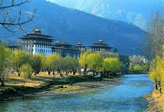

Phoenix erbjuder härliga resor till det okända Bhutan. Inklämt och undangömt ligger det magiska, mystiska, lugna och fridfulla Bhutan bland Himalayas majestätiska toppar. Bhutan öppnades för turism först 1975 och sedan dess kontrolleras antalet besökare av regeringen för att behålla landets särart och för att försöka förhindra miljöförstöring.

Bhutan är ett litet fattigt kungadöme som ligger inklämt mellan Indien och Kina i Himalaya. Under hundratals år var landet isolerat från omvärlden; först på 1960-talet skedde en öppning utåt. Sedan kungen gav upp sin absoluta makt i slutet av 1990-talet har en demokratisering genomförts. De flesta av landets invånare lever på jordbruk för självhushåll. Vattenkraften i bergen tas till vara. Elektricitet är landets viktigaste exportprodukt.
Samhället ska moderniseras, men försiktigt så att den egna kulturen inte försvinner. Kungen vill slå vakt om religiösa seder och det lokala tal- och skriftspråket. Den buddistiska religionen är i högsta grad levande bland de äldre bhutaneserna och de buddistiska böneflaggorna klär varenda kulle kring Thimphu och Paro.
Att resa till Bhutan kan liknas med att resa i tiden. Vi reser på slingriga vägar utmed kristallklara floder bland hängbroar och intensivt grönskande risfält. Vi passerar väldiga timmerhus i alpstil bland buddhabilder och böneflaggor i glada färger och i bakgrunden tornar väldiga snöklädda bergstoppar upp sig mot himlen.